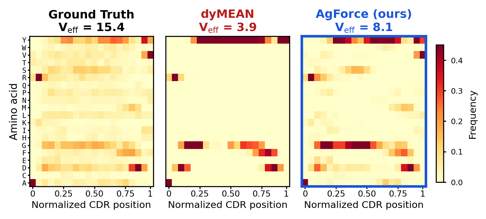
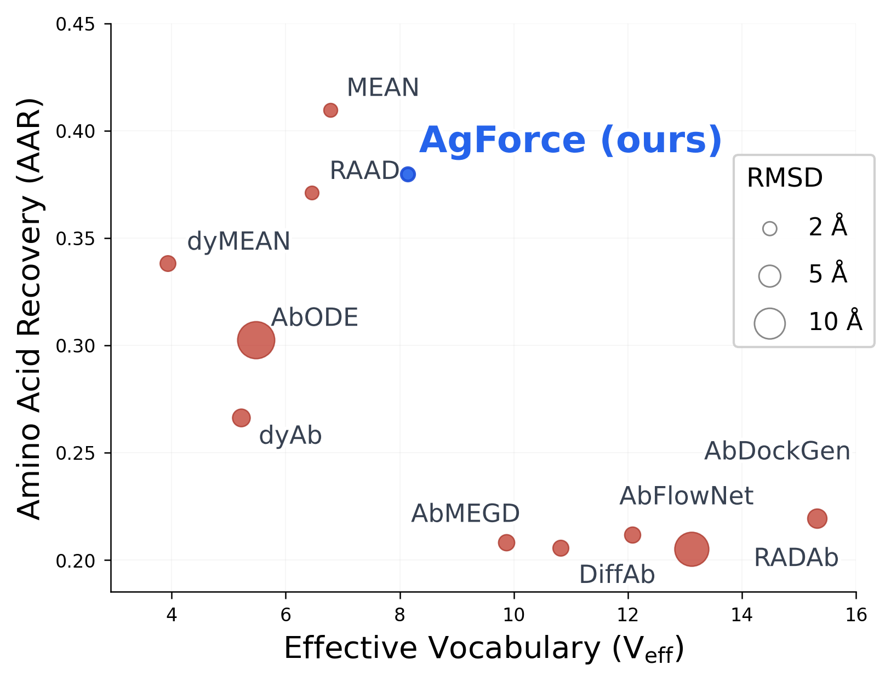

TL;DRAntibody design methods condition on the antigen, yet the complementarity-determining regions (CDRs) they emit barely depend on it. We show the training loss is not at fault, since the learned distribution does carry antigen information, and greedy decoding discards it. AgForce intervenes at the encoder, the sequence head and the objective, and leads all four interface metrics on the three splits of ChiMERa-Bench while holding more amino acid diversity than any method of comparable accuracy.
Abstract
Antibody design methods condition on antigen structure to generate complementarity-determining regions (CDR), yet a systematic evaluation of baseline methods reveals that they largely ignore the antigen input. We identify three failure modes that explain this behavior. Antigen blindness arises because models derive predictions from antibody framework context rather than antigen information: every method we test matches a positional-frequency null at $r = 0.59$ to $0.80$, and none recovers more than 22% of the residues that actually contact the antigen. Vocabulary collapse cuts the effective amino acid vocabulary to between 3.7 and 6.9 from a native 14.9, and the methods that collapse hardest are exactly the ones that top the recovery leaderboard. The argmax bottleneck ties the two together. Cross-entropy is a strictly proper scoring rule, so the trained distribution does absorb antigen information, and every method cuts perplexity to roughly a third of an antigen-blind null. Greedy decoding then discards it: a null predictor that sees only position and loop length recovers 35% of residues while emitting just 8 distinct amino acids, and no method beats it by more than 5 points. We propose a novel encoder-decoder architecture called AgForce, that uses a graph neural network (GNN) as the encoder and specialized decoders for sequence-structure co-design. Specifically, we apply framework dropout, gated bottlenecks, and hyperbolic cross attention that prevent the antibody shortcut path. In the decoder, a Mixture Density Network (MDN) sequence head with Potts-like pairwise coupling and annealed Multiple Choice Learning (aMCL) keeps several modes of the sequence posterior alive through decoding. An antigen cycle consistency head routes gradients through the sequence decoder, forcing predicted distributions to encode antigen identity. On the ChiMERa-Bench benchmark, AgForce leads every interface metric on all three splits (fnat, iRMSD, DockQ, and epitope F1) together with structure, while preserving a larger effective vocabulary than any method that competes with it on recovery.
Three failure modes, one cause
Designing a CDR means choosing the residues and the backbone of a loop that binds a given epitope, so the output should change when the target changes. We retrained ten CDR-H3 design methods on ChiMERa-Bench and measured how much of the antigen actually reaches the decoded loop. Three failure modes appear together, and the third explains the first two.
Antigen blindness
The substitution pattern of each method matches a positional frequency table at $r = 0.59$ to $0.80$ and the BLOSUM45 matrix at $|r| \le 0.12$. MEAN recovers 48.4% of residues away from the interface and 20.3% of those that contact the antigen, and no method passes 21.7% at contacts.
Vocabulary collapse
Native CDR-H3 loops carry an effective vocabulary of 14.9 amino acids. Graph networks with greedy decoding emit 3.7 to 6.9, overrepresent tyrosine and glycine, and place tryptophan, cysteine and methionine at close to zero frequency. The six least diverse methods are the six most accurate ones.
The argmax bottleneck
Cross-entropy is a strictly proper scoring rule, so conditioning on the antigen lowers it and the learned distribution does hold antigen information. We lose it when we decode with the argmax. A null that sees only the position and the loop length reaches 0.349 recovery with 8 distinct residues, and no method improves on it by more than 0.05.

The sharpest way to see the failure is to hold the antibody fixed and change the target. We took the saved designs of each retrained model on the test split and measured how often the design for one target matches the design for another of the same loop length. Native loops agree at 0.26. dyMEAN agrees at 0.99, and returns the identical loop for 80% of such pairs. AgForce agrees at 0.53, the lowest of the methods that compete on recovery, against 0.62 for MEAN and 0.72 for RAAD.
The diagnosis also sets what a fix can claim. Greedy decoding emits a deterministic function of the conditioning, so the diversity of the output is bounded by the number of modes a model realizes, however much entropy the underlying distribution holds. A method therefore has to keep several modes alive through decoding and to supervise the interface directly, rather than hoping that message passing carries the antigen to the sequence head.
Five interventions, one model
AgForce represents the complex as a heterogeneous graph over heavy-chain, light-chain and antigen residues, three global tokens and three virtual nodes, with ten edge types covering intra-chain, inter-chain, global and virtual-node connectivity. The encoder is a five-layer relation-aware equivariant graph network that updates residue features and coordinates together. Each intervention below targets one of the failure modes above.
Framework dropout against the antibody shortcut
During training we set each heavy-chain framework embedding to zero with probability $p = 0.3$ before message passing, so the corruption propagates through all five layers and the model has to reach for the antigen pathway instead of the framework context it would otherwise lean on.
Hyperbolic cross-attention and an antigen gate
CDR residues attend to epitope residues on the Lorentz hyperboloid with curvature $c = 1$ and four heads, where volume grows exponentially with distance and the global geometry of an epitope can constrain a local residue choice,
A gate then decides how much of that antigen context enters the sequence head, where $\mathbf o_i$ is the attention output and $\alpha$ a learnable mixing coefficient,
A mixture head that keeps more than one mode
The sequence head is a mixture density network with $K = 4$ components and per-position mixing weights. Each component carries a symmetric $20\times 20$ coupling matrix $\mathbf J_k$ in the manner of a Potts model, and two rounds of belief propagation refine its logits with messages from the neighboring positions. Annealed multiple choice learning weights the components by their own loss, with the temperature falling from 2.0 to 0.1 over twenty epochs,
At high temperature the components explore together, and as $\tau$ falls the assignment sharpens toward winner-take-all, so each component converges to the conditional distribution of the subset it wins.
An antigen term that reaches the decoder
To force the predicted distributions themselves to carry antigen identity, we embed the soft sequence $\mathbf p_i$ through the learnable amino acid table $\mathbf E_{\text{AA}}$ and match it to the mean-pooled antigen embedding $\mathbf a_i$ with an InfoNCE objective over the batch,
If the model emitted the same CDR for all targets, the embeddings would coincide and the classification would fall to chance. The gradient flows through the softmax output of the sequence head, which separates this term from contrastive losses that act on embeddings and bypass the decoder.
The objective
Five terms train the model together: the mixture sequence loss, a Huber loss on the C$\alpha$ coordinates, the shadow paratope loss that holds the designed backbone at the right distance from the epitope surface, a determinantal point process term that matches the eigenvalue spectrum of the predicted residue distribution to the native one, and the antigen term above.
Coordinate predictions are SE(3)-equivariant and sequence predictions SE(3)-invariant. The group is SE(3) rather than E(3) by design, since the orientation features are built from cross products and a reflection flips them, which is the correct behavior for chiral L-amino acid backbones.
Results on ChiMERa-Bench
We report CDR-H3 on the antigen-fold split, which holds out whole antigen folds and so measures generalization to unseen target families, with 2,338 complexes for training and 292 each for validation and test. Sequence quality is amino acid recovery (AAR) and perplexity (PPL), structure quality is C$\alpha$ RMSD, and binding quality is the fraction of native contacts (fnat), the interface RMSD (iRMSD), DockQ and epitope F1. All baselines were retrained with their published configurations.
| Method | AAR↑ | PPL↓ | RMSD↓ | fnat↑ | iRMSD↓ | DockQ↑ | epiF1↑ |
|---|---|---|---|---|---|---|---|
| Equivariant graph networks | |||||||
| RAAD | .38 | 3.06 | 1.65 | .62 | 1.42 | .70 | .78 |
| MEAN | .40 | 2.79 | 1.66 | .62 | 1.42 | .70 | .78 |
| dyMEAN | .37 | 3.35 | 2.06 | .61 | 1.79 | .66 | .75 |
| Diffusion and flow | |||||||
| DiffAb | .23 | – | 2.24 | .52 | 2.10 | .58 | .65 |
| AbFlowNet | .23 | – | 2.70 | .56 | 2.46 | .60 | .65 |
| AbMEGD | .24 | – | 2.25 | .55 | 2.13 | .59 | .65 |
| RADAb | .25 | – | 7.79 | .51 | 4.78 | .57 | .65 |
| dyAb | .28 | – | 2.40 | .56 | 1.81 | .65 | .72 |
| Other paradigms | |||||||
| AbODE | .27 | 10.78 | 13.17 | .16 | 4.00 | .39 | .40 |
| AbDockGen | .24 | 7.89 | 3.65 | .46 | 2.41 | .57 | .75 |
| AgForce (ours) | .38 | 3.17 | 1.55 | .69 | 1.27 | .74 | .82 |
CDR-H3 on the antigen-fold split of ChiMERa-Bench, 292 test complexes, means over the test set. Bold marks the best value in a column and underline the second best. AbODE's structural metrics are not comparable, since its decoder collapses to degenerate geometry, and it is scored on the 64 complexes its released pipeline completed. The paper reports the standard deviations.
AgForce takes five of the seven columns. It reaches the lowest backbone error at 1.55 Å and the best value on all four interface measures, raising fnat from 0.62 to 0.69, DockQ from 0.70 to 0.74 and epitope F1 from 0.78 to 0.82, while cutting interface RMSD from 1.42 to 1.27 Å. Structure and binding improve together rather than trading against each other.
AgForce does not win raw recovery. MEAN reaches 0.40 against 0.38, and that gap measures collapse rather than design quality. MEAN emits an effective vocabulary of 6.7 against 8.9 for AgForce, and the diagnosis above shows that recovery under greedy decoding is maximized by collapsing onto positional modes. AgForce gives up 2 points of recovery for 7 points of fnat and 4 points of epitope F1.

The other two splits, and per-CDR results
The epitope-group split holds out clusters of related epitopes and the temporal split holds out complexes deposited after a cutoff date. AgForce leads fnat, iRMSD, DockQ and epitope F1 on both, and adds perplexity and RMSD on both. MEAN again leads recovery on epitope-group, 0.42 against 0.39, and ties on temporal at 0.39.
| Split | Method | AAR↑ | PPL↓ | RMSD↓ | fnat↑ | iRMSD↓ | DockQ↑ | epiF1↑ |
|---|---|---|---|---|---|---|---|---|
| Epitope-group | RAAD | .38 | 3.31 | 1.95 | .49 | 1.64 | .64 | .67 |
| MEAN | .42 | 3.00 | 2.01 | .48 | 1.66 | .63 | .67 | |
| AgForce | .39 | 2.99 | 1.88 | .53 | 1.56 | .66 | .70 | |
| Temporal | RAAD | .38 | 3.24 | 1.81 | .61 | 1.46 | .71 | .74 |
| MEAN | .39 | 3.31 | 1.84 | .60 | 1.44 | .71 | .73 | |
| AgForce | .39 | 3.07 | 1.71 | .64 | 1.36 | .73 | .76 |
The two strongest baselines of each split against AgForce. The paper reports all ten methods.
On the shorter and more constrained loops, AgForce matches the strongest baseline and takes the backbone. It reaches 0.70 recovery on CDR-H1 against 0.69 for RAAD with 0.50 Å RMSD against 0.54 Å, and 0.59 on CDR-H2 against 0.60 with 0.45 Å against 0.49 Å. The methods separate on H3, where the design problem is open.
Designs on held-out complexes
We ran the trained AgForce model on the test complexes of the antigen-fold split, whose antigen folds are absent from training. Each video turns one complex about the axis from the epitope to the antibody and pushes in to the interface, where the designed loop lies over the native one. The antigen carries its surface with the epitope painted on it (), the variable domains of the antibody appear as a cartoon (), and the two C$\alpha$ traces compare the native loop () with the design, colored by whether each residue matches the native one ( matches, differs).
The model predicts the C$\alpha$ trace of the loop, which is what the videos draw. Over the 292 test complexes of this split, AgForce averages 0.38 recovery, 1.55 Å backbone RMSD and 0.74 DockQ; these four complexes rank among the best of the split on the interface.
The components that earn their place
We changed one component at a time on the epitope-group split, where two training runs of the full model differ by 0.002 recovery and 0.016 Å RMSD, which sets the noise floor. We report the negative results as plainly as the positive ones.
Depth and evolutionary context
Depth is the structural lever and the one component whose effect reproduces on both splits. Three layers lose 2.9 points of fnat, 0.10 Å of interface RMSD and 0.09 Å of backbone RMSD, and seven layers recover all three. Removing the frozen ESM-2 embeddings is the largest single effect on the sequence side, costing 3.1 points of recovery and 1.96 of effective vocabulary, so evolutionary context supplies accuracy and diversity together rather than buying one with the other.
The decoder head
A plain linear head matches the full mixture head on each column, 0.394 recovery against 0.392 and 1.853 Å RMSD against 1.864 Å, and removing the pairwise term or the mixture term individually changes nothing beyond noise. Replacing hyperbolic attention with Euclidean attention leaves fnat and DockQ flat and raises effective vocabulary to 8.73, the highest in the table. The interface gains therefore trace to the shadow paratope supervision and to the encoder.
The antigen term
Removing the InfoNCE term raises recovery from 0.392 to 0.402 and leaves effective vocabulary unchanged at 8.06, so the gain is not a collapse artifact. The term does not deliver the conditioning it was designed for. Removing framework dropout gives the highest recovery in the table, 0.403, alongside the second lowest effective vocabulary, 7.56, which is the pattern the argmax bottleneck predicts.
BibTeX
@article{ahmed2026agforce,
title = {AgForce Enables Antigen-conditioned Generative Antibody Design},
author = {Ahmed, Mansoor and Patterson, Murray},
journal = {arXiv preprint},
year = {2026}
}